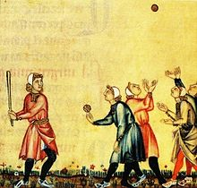

Cricket was first played around 1597, which comes from the evidence of a court case in Guildford. The game was played on a plot of land with a bat and ball and also with wickets. Ever since the sport was first invented, it skyrocketed in popularity, especially in England. The old word for cricket was "cryce" meaning a crutch or a staff. In old French, "criquet" meant a kind of club or stick. Now in England, it is one of the most popular sports and it is growing in popularity everyday. Now there is the national team and other semi-professional teams for amateur players.
